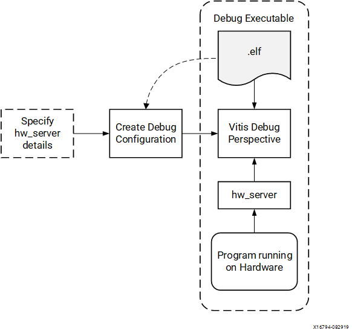
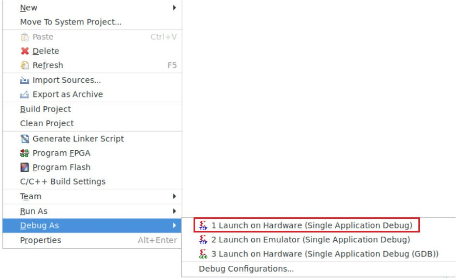
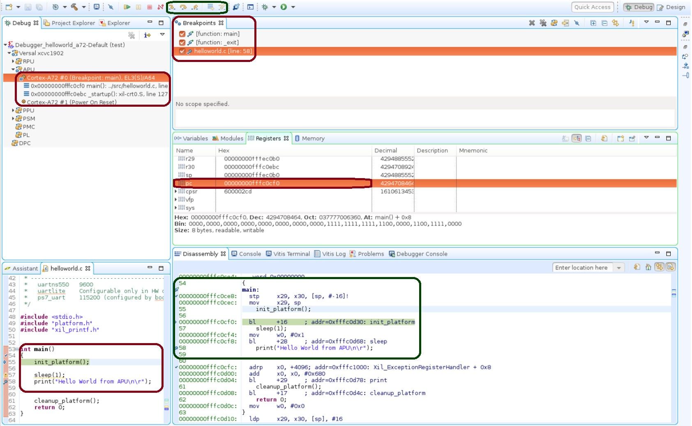
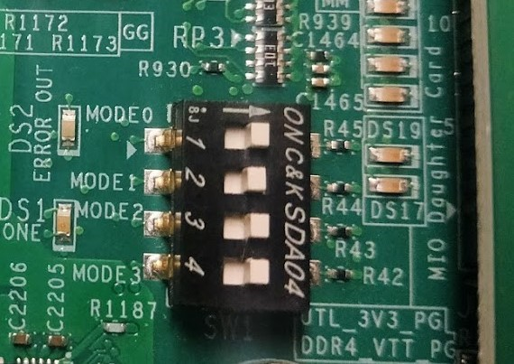
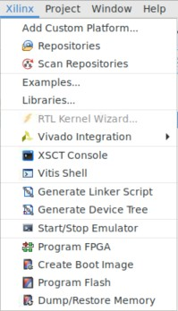
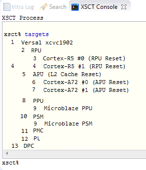
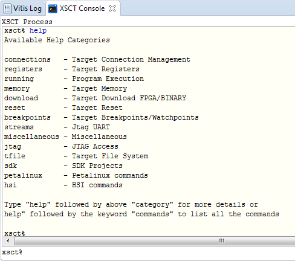
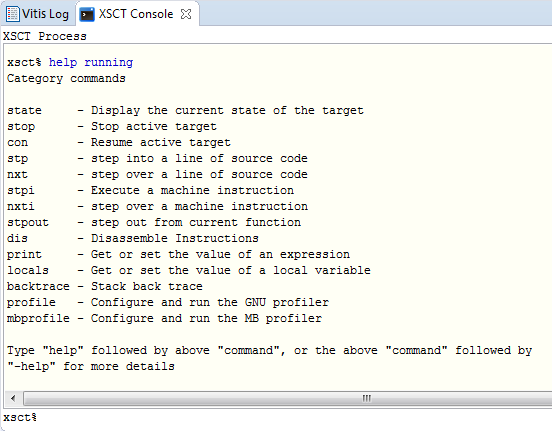

Vitis ソフトウェア プラットフォームを使用したデバッグ¶
この章では、これまで説明してきたデザイン フローで可能なデバッグについて説明します。最初のオプションは、ザイリンクス Vitis™ソフトウェア プラットフォームを使用したデバッグです。
Vitis ソフトウェア プラットフォーム デバッガーには、次のデバッグ機能があります。
Arm® Cortex™-A72、Arm Cortex-R5F、および MicroBlaze™ プロセッサ アーキテクチャ上のプログラムのデバッグをサポート (ヘテロジニアス マルチプロセッサ ハードウェア システムのデバッグ)。
ハードウェア ボード上のプログラムのデバッグをサポート。
リモート ハードウェア システムでのデバッグをサポート。
プログラムをデバッグするための豊富な機能を備えた IDE を提供。
テスト スクリプトの実行および自動化のためのツール コマンド言語 (Tcl) インターフェイスを提供。
Vitis ソフトウェア プラットフォーム デバッガーを使用すると、プログラムの実行中に何が起こっているかを確認できます。プロセッサを停止するブレークポイントまたはウォッチ ポイントの設定、プログラムのステップ実行、プログラム変数およびスタックの確認、システム内のメモリ内容の確認などを実行できます。
Vitis ソフトウェア プラットフォームでは、ザイリンクス システム デバッガーを使用したデバッグがサポートされます。
ザイリンクス システム デバッガー¶
ザイリンクス Vitis™ソフトウェア プラットフォーム デバッガーを使用すると、コードを 1 行ずつをステップ スルーできます。プロセッサを停止するブレークポイントまたはウォッチポイントの設定、プログラムのステップ実行、プログラム変数およびスタックの確認、システム内のメモリ内容の確認などを実行できます。
デバッガーでは、シングル アプリケーション デバッグと GNU デバッガー (GDB) によるデバッグがサポートされます。ザイリンクスのカスタマイズしたシステム デバッガーは、オープンソース ツールから作成されたツールで、Vitis ソフトウェア プラットフォームに統合されています。
ザイリンクス システム デバッガーでは、ザイリンクスの hw_server が基本のデバッグ エンジンとして使用されます。Vitis ソフトウェア プラットフォームは、各ユーザー インターフェイス操作を一連の TCF (Target Communication Framework) コマンドに変換し、システム デバッガーからの出力を処理して、デバッグされているプログラムの現在のステートを表示します。Vits IDE は、ザイリンクスの hw_server を使用してハードウェア上のプロセッサと通信します。次の図に、このデバッグ ワークフローを示します。
図 1: システム デバッガーのフロー

デバッグ ワークフローは、次の要素で構成されます。
実行可能 ELF ファイル: ELF ファイルを実行できユーザー アプリケーションをデバッグするには、デバッグ用にコンパイルされた ELF ファイルを使用する必要があります。デバッグ ELF ファイルには、デバッガーへの追加のデバッグ情報が含まれ、ソース コードとその元のソースから生成された 2 進数間が直接関連付けられます。ビルド コンフィギュレーションを→するには、ソフトウェア アプリケーションを右クリックして [Build Configurations] → [Manage] をクリックします。
デバッグ コンフィギュレーション: デバッグ セッションを開始するには、Vitis ソフトウェア プラットフォームでデバッグ コンフィギュレーションを作成する必要があります。このコンフィギュレーションには、実行ファイル名、デバッグするプロセッサ ターゲットなど、デバッグ セッションを開始するのに必要な情報が含まれます。デバッグ コンフィギュレーションを作成するには、ソフトウェア アプリケーションを右クリックして [Debug As] → [Debug Configurations] をクリックします。
Vitis ソフトウェア プラットフォームの [Debug] パースペクティブ: [Debug] パースペクティブを使用すると、ワークベンチでプログラムのデバッグまたは実行を管理できます。ブレークポイントを設定、実行中のプログラムを一時停止、コードをステップ実行、変数の内容を確認するなど、プログラムの実行を制御できます。[Debug] パースペクティブを表示するには、[Window] → [Open Perspective→ → [Debug] をクリックします。
Vitis ソフトウェア プラットフォームで、コードの修正、実行ファイルの構築、プログラムのデバッグというサイクルを繰り返すことができます。
注記: コンパイル後にソースを編集すると、デバッグ情報がソースに直接リンクされるため、行番号が変更されます。同様に、最適化されたバイナリをデバッグすると、実行トレース中に予期しないジャンプが発生することがあります。
Vitis ソフトウェア プラットフォームでのソフトウェアのデバッグ¶
この例では、Hello World アプリケーションのデバッグについて説明します。
APU または RPU で Hello World アプリケーションを作成しなかった場合は、「ベアメタル Hello World アプリケーションの実行」または「DDR メモリでのベアメタル Hello World アプリケーションの実行」の手順に従ってください。
hello world アプリケーションを作成したら、Vitis ソフトウェア プラットフォームで次の例を実行してソフトウェアをデバッグします。
アプリケーションを右クリックし、[Build Project] をクリックしてアプリケーションをビルドします。
次の図に示すように、アプリケーション プロジェクトを右クリックし、[Debug As] → [Launch on Hardware (Single Application Debug)] をクリックします。

注記: [Debug] パースペクティブは、[Window] → [Debug Perspective] をクリックしても起動できます。

注記: このページに示されているアドレスは、システムで表示されているものと若干異なる場合があります。
プロセッサが
main()メソッドの冒頭にあり、プログラム実行が 0x00000000fffc0cf0 で停止していることがわかります。この情報は [Disassembly] ビューで確認できます。このビューに、アセンブリ レベルのプログラム実行が0x00000000fffc0cf0で一時停止していることが示されています。注記: [Disassembly] ビューが表示されていない場合は、[Window] → [Disassembly] をクリックします。
helloworld.c ウィンドウにも、C コードの最初の実行可能な行で実行が一時停止していることが表示されています。[Registers] ビューを選択し、プログラム カウンターである pc レジスタが
0x00000000fffc0cf0を含むことを確認します。注記: [Registers] ウィンドウが表示されていない場合は、[Window] → [Registers] をクリックします。
helloworld.cウィンドウのprintf("Hello World from APU\n\r");を読み出すコード行の横の空白をダブルクリックします。これにより、printfコマンドにブレークポイントが設定されます。ブレークポイントの確認には、[Breakpoints] ウィンドウを使用します。注記: [Breakpoints] ウィンドウが表示されていない場合は、[Window] → [Breakpoints] をクリックします。
[Run] → [Step Into] をクリックし、
init_platform()ルーチンにステップインします。プログラムの実行が0x00000000fffc0cf0の位置で一時停止します。コール スタックの深さは 2 レベルになります。[Run] → [Resume] をクリックし、プログラムをブレークポイントまで実行します。
プログラムの実行は、
printfコマンドを含むコードの行で停止します。[Disassembly] および [Debug] ウィンドウに、プログラムの実行が0x00000000fffc0cf4で停止していることが示されます。注記: helloworld ソース コードを変更した場合、ウィンドウに表示される実行アドレスは異なる場合があります。
[Run] → [Resume] をクリックし、プログラムを最後まで実行します。
プログラムの実行が完了すると、[Debug] ウィンドウにプログラムが exit というルーチンで一時停止していることが示されます。これは、デバッガーの制御下で実行しているときに発生します。
コードを複数回再実行します。シングル ステップ、メモリの検査、ブレークポイント、コードの変更、および print 文の追加を試してみます。ビューの追加および移動を試します。
ヒント: Vitis ソフトウェア プラットフォームのデバッグ ショートカット (ステップ イン (F5)、ステップ リターン (F7)、ステップ オーバー (F6)、および再開 (F8)) を使用できます。または、ツールバー ボタンを使用することもできます。
ザイリンクス ソフトウェア コマンド ライン ツール (XSCT) を使用したデバッグ¶
XSCT の一部として含まれる XSDB を使用してコマンド ライン モードでデバッグできます。この例では、XSCT を使用してベアメタル アプリケーション hello_world_r5 をデバッグします。
次の手順は、XSCT を使用して Arm Cortex-R5F にベアメタル アプリケーションをロードする方法を示しています。
この例は、XSDB/XSCT を使用して可能なコマンド ライン デバッグを示すことを目的としています。要件に基づいて、システム デバッガー GUI または XSCT のコマンド ライン デバッガーのいずれかを選択してコードをデバッグできます。すべての XSCT コマンドはスクリプト記述可能であり、これはこの例で説明するコマンドに当てはまります。
ターゲットの設定¶
USB ケーブルでターゲット USB-JTAG コネクタとホスト マシンの USB ポートを接続します。
SW1 を次の図のように設定して、ボードを JTAG ブート モードに設定します。

電源スイッチ SW13 を使用してボードに電源を投入します。
Vitis ソフトウェア プラットフォーム ツールバーの [XSCT Console] ボタンをクリックして、[XSCT Console] ビューを開きます。または、[Xilinx] → [XSCT Console] をクリックしても XSCT コンソールを開くことできます。

[XSCT Console] ビューで、次の connect コマンドを使用して JTAG を介してターゲットに接続します。
xsct% connectconnect コマンドは、接続のチャネル ID を返します。
pdi/bin ファイルを読み込みます。
device program <path to .pdi file>注記： PDI ファイルは
C:\edt\edt_versal\edt_versal.runs\impl_1\edt_versal_wrapper.pdiに含まれます。Windows では、バックスラッシュがエスケープ文字として解釈されないように、パス名は中かっこで囲む必要があります。たとえば、{C:\path\to\file.pdi} のようにして、バックスラッシュがエスケープ文字として解釈されないようにします。これは、スラッシュを使用する Linux では必要ありません。
XSCT を使用したアプリケーションのロード¶
次に、XSCT を使用してアプリケーションをロードする手順を示します。
xsct% targetsを実行します。target コマンドにより、使用可能なターゲットがリストされ、各 ID を使用してターゲットを選択できます。ターゲットには JTAG チェーンで検出されたときに ID が割り当てられるので、ターゲット ID はセッションごとに変わります。
注記: スクリプト記述などの非対話型の使用法では、ID を使用してターゲットを選択するのではなく、
-filterオプションを利用してターゲットを選択できます。次の図に示すように、ターゲットが一覧表示されます。

Arm® Cortex-R5F コア 0 に hello_world_r5 アプリケーションをダウンロードします。
RPU Cortex™-R5F コア 0 のターゲット ID を選択します。
xsct% 3xsct% -targets rstprocessor
rst -processorコマンドは個々のプロセッサ コアのリセットをクリアします。Versal ACAP を JTAG ブート モードで起動すると、すべての Cortex-A72 コアおよび Cortex-R5F コアがリセット状態に保持されるので、この操作は重要です。これらのコアでデバッグを実行する前に、各コアのリセットをクリアする必要があります。リセットは XSDB の rst コマンドでクリアできます。注記: rst -cores コマンドは、現在のターゲットが子である、グループ (APU または RPU など) 内にあるすべてのプロセッサ コアのリセットをクリアします。たとえば、Cortex-A72 #0 が現在のターゲットである場合、
rst -coresは APU のすべての Cortex-A72 コアのリセットをクリアします。xsct% dow {C:\edt\edt_vck190\helloworld_r5\Debug\helloworld_r5.elf}または
xsct% dow C:/edt/edt_vck190/helloworld_r5/Debug/helloworld_r5.elfここで、ELF ファイルのセクションが順にダウンロードされるのが表示されます。XSCT プロンプトはダウンロードが正常に完了すると表示されます。次に、シリアル端末 (Tera Term、Minicom、または UART-0 USB シリアル接続用の Vitis ソフトウェア プラットフォーム シリアル端末インターフェイス) を設定します。
シリアル端末の設定¶
使用しているホスト マシンに応じて Tera Term または Minicom を使用し、ターミナル セッションを開始します。COM ポートとボー レートを次の図に示すように設定します。

ポート設定では、デバイス マネージャーで COM ポートを検証します。VCK190 ボードでは 3 つの USB UART インターフェイスを使用できます。最も小さい番号のインターフェイスに関連付けられた COM ポートを選択します。つまりここでは、UART-0 に Interface-0 の com-port を選択します。
XSCT を使用したアプリケーションの実行およびデバッグ¶
アプリケーションを実行する前に、
main()にブレークポイントを設定します。xsct% bpadd -addr &mainこのコマンドにより、ブレークポイント ID が返されます。bplist コマンドを使用して挿入されたブレークポイントを確認できます。XSCT のブレークポイントの詳細は。XSCT で「
help breakpoint」と入力して確認します。プロセッサ コアの実行を再開します。
xsct% conコアがブレークポイントに到達すると、次のメッセージが表示されます。
xsct% Info: Cortex-R5 \#0 Stopped at 0x10021C (Breakpoint)コアが停止しているので、レジスタを表示して確認します。
xsct% rrdローカル変数を表示します。
xsct% localsソース コードの行をステップ実行し、スタックト レースを表示します。
xsct% nxt Info: Cortex-R5 #0 Stopped at 0x100490 (Step) xsct% bt
helpコマンドを使用すると、ほかのオプションを表示できます。
help runningコマンドを使用すると、XSCT を使用してアプリケーションを実行またはデバッグするためのオプションを表示できます。
コードを実行します。
xsct% conここで、UART-0 ターミナルに Cortex-R5F アプリケーションのメッセージが表示されます。
© Copyright 2020-2021 Xilinx, Inc.
Apache ライセンス、バージョン 2.0 (以下「ライセンス」) に基づいてライセンス付与されています。本ライセンスに準拠しないと、このファイルを使用することはできません。ライセンスのコピーは、http://www.apache.org/licenses/LICENSE-2.0 から入手できます。
適切な法律で要求されるか、書面で同意された場合を除き、本ライセンスに基づいて配布されるソフトウェアは、明示的または黙示的を問わず、いかなる種類の保証または条件もなく、「現状のまま」配布されます。ライセンスに基づく権限と制限を管理する特定の言語については、ライセンスを参照してください。